Case study · 01

Case study · 01
164%
average increase in feature adoption
550%
peak boost in specific profile interactions
64%
average email interaction rate
Throughout the year, a company managing 1,500+ employees across North America released seasonal themes to drive platform affinity. This project introduced a "ghost hunt" gamification layer to boost adoption of underused mobile features.
Data showed that several key features sat underused after 18 months live. These touchpoints were critical for operational efficiency, but business rules forbid mandating usage, so we needed an incentive-based way to drive interactions.
With Halloween approaching, the design team proposed a seasonal campaign to guide users toward these features, including the upcoming "Dark Mode" release. We launched an omni-channel campaign consisting of a series of timed emails and five hidden "ghosts" placed strategically near high-value, low-usage components. Each ghost was introduced via email with a unique backstory, transforming a standard UI task into a narrative-driven "hunt."
Illustrations were locked by mid-September, and, as lead illustrator, I owned the ghosts' visual identity and backstory copy while shaping the campaign flow with the team. The seasonal theme itself launched across both desktop and mobile, but the hunt was mobile-only, since a strict two-week build window meant trading cross-platform reach for execution quality on a single, high-traffic surface. We also used the campaign's traffic spike to pull forward the Dark Mode release, making the "Dark Mode Toggle" the hunt's final destination.


All five targeted features saw increased engagement, with "Edit Profile" seeing a 550% boost.
66% of the initial Dark Mode adoption was directly attributed to users who engaged with the ghost hunt.
Higher email open rates saw proportionally stronger component performance.